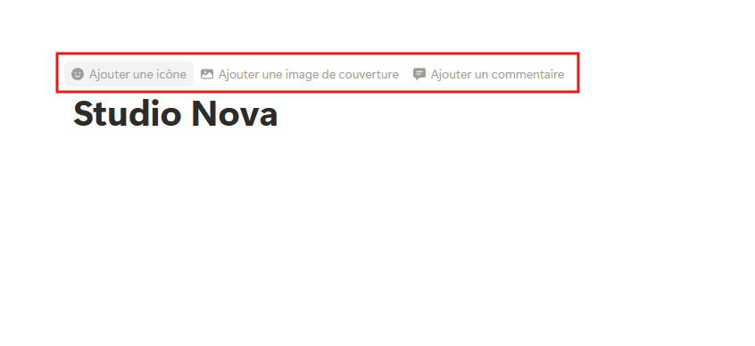
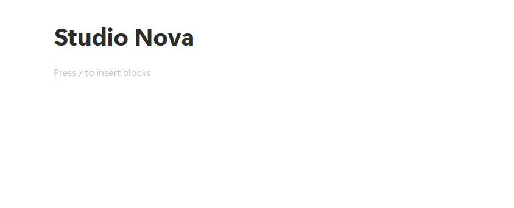

Qu'est-ce qu'une page
Étape 1 : comprendre
Au module 1, tu as créé ta page « Studio Nova ». Dans Notion, tout commence par une page : tes notes, tes projets, ta page d'accueil. Avant de les remplir, il faut savoir de quoi une page est faite.
Une page, c'est une feuille blanche dans laquelle tu écris et ranges du contenu. Elle ressemble à un document Word, avec deux différences importantes :
- elle n'a pas de longueur fixe ni de mise en page à régler : elle s'allonge au fur et à mesure que tu écris ;
- elle peut contenir d'autres pages, comme un dossier contient des fichiers. Une page rangée dans une autre s'appelle une sous-page (leçon 2.8).
Une page a quatre parties :
- L'icône (facultative) : un petit symbole devant le titre, qui aide à repérer la page d'un coup d'œil.
- La couverture (facultative) : une image en bandeau tout en haut de la page.
- Le titre : le nom de la page. C'est lui qui s'affiche dans la barre latérale et dans la recherche.
- Le contenu : tout ce qui se trouve sous le titre, c'est-à-dire le texte, les listes, les images…

Une page est un document sans limite de longueur, qui peut contenir du contenu et d'autres pages.
Attention : dans Notion, il n'y a pas de dossiers. Pour ranger des pages ensemble, on les place dans une autre page. Si tu cherches un bouton « Nouveau dossier », c'est normal de ne pas le trouver.
Observer ta page « Studio Nova »
- Dans la barre latérale, clique sur ta page « Studio Nova », dans la section « Pages privées ».
- Passe ta souris juste au-dessus du titre, sans cliquer. Des options apparaissent : « Ajouter une icône » et « Ajouter une image de couverture ».

- Ne clique pas encore : tu ajouteras une icône dans la leçon suivante.
- Clique juste sous le titre. Un texte gris apparaît, qui t'invite à écrire : c'est le début du contenu de la page.

Astuce : le texte gris qui apparaît sur une ligne vide n'est qu'une aide. Il disparaît dès que tu commences à écrire : tu n'as pas besoin de l'effacer.
Exercice · dans Notion
Ta première phrase
- Ouvre ta page « Studio Nova ».
- Clique sous le titre et écris : « Espace de travail de l'agence Studio Nova. »
- Regarde la barre latérale : le titre de la page n'a pas changé.
Résultat attendu : ta page « Studio Nova » a un titre et une première ligne de contenu. Le titre reste « Studio Nova » dans la barre latérale, car la phrase fait partie du contenu, pas du titre.
Étape 3 : vérifier
Objectif de la leçon
Tu sais maintenant ce qu'est une page dans Notion et reconnaître ses quatre parties : l'icône, la couverture, le titre et le contenu.
Choisis une réponse avant de valider.
Notion n'a pas de dossiers. Une page peut contenir d'autres pages : c'est elle qui joue le rôle de dossier. Le titre, lui, ne sert qu'à nommer la page.
Choisis une réponse avant de valider.
La barre latérale affiche le titre de chaque page, précédé de son icône. C'est pour ça qu'un titre clair est si important : c'est lui que tu lis pour retrouver la page.